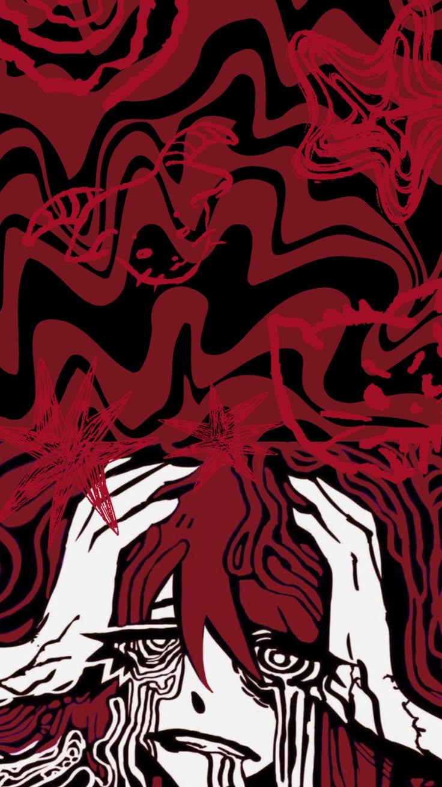
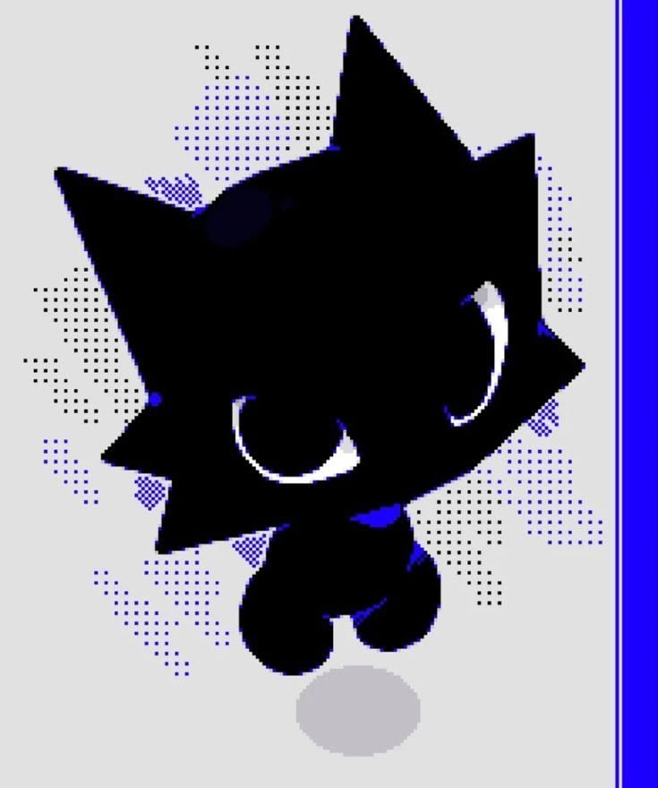

Python
Labirinto estilo Pac-Man
Jogo feito em Python: mapas gerados aleatoriamente, sistema de pontos dinâmico e armadilhas estratégicas espalhadas pelo caminho.
VER PROJETO →> OLÁ, MEU NOME É
Atualmente sou estudante de Sistemas de Informação na PUCPR, busco sempre aprender coisas novas, tenho muitas curiosidades e me gosto de me aprofundar nelas. Com isso, aqui estará um pouco sobre mim, demonstrando o que eu ja fiz nessa jornada que percorri para meu desenvolvimneto pessoal.
Scroll↓


Bem-vindo a como eu sou! Meu nome é Guilherme, mas tambem sou conhecido pelas pessoas a minha volta como Gui, GuiGui - Sim... GuiGui...- como também Galê ( minha verdadeira identidade ) e atualmente tenho 18 anos. Com esses diversos apelidos, todos ainda são sobre mim, mas afinal quem eu sou?
Com isso, demonstro um pouco de mim, mas ainda dessa forma, tem muitas coisas que posso ser, mas isso ainda eu vou construir.
Isso vale pro código também: sou estudante de Sistemas de Informação na PUCPR, formado tecnicamente pela TECPUC, e estou atrás do meu desenvolvimento pessoal em Tecnologia da Informação — como um lugar pra desenvolver de verdade em software, banco de dados e inteligência artificial.
Ferramentas que uso
Jogo feito em Python: mapas gerados aleatoriamente, sistema de pontos dinâmico e armadilhas estratégicas espalhadas pelo caminho.
VER PROJETO →Operações matemáticas básicas com interface em terminal — meus primeiros passos praticando lógica de programação.
VER PROJETO →Construído com HTML e CSS puros, pra praticar estruturação e estilização de páginas — a base de tudo que veio depois.
VER PROJETO →Ideia de uma eletiva sobre IA como ferramenta de apoio em Python: automatizar dados de inventário de empresas. Ainda no papel.
Volto aqui assim que sair do papel.Ferramentas que eu uso:
Habilidades interpessoais:
Meu objetivo profissional é me tornar um desenvolvedor de software completo, capaz de criar soluções inovadoras e eficientes. Busco oportunidades que me permitam aplicar meus conhecimentos em projetos desafiadores, colaborar com equipes talentosas e continuar aprendendo e crescendo na área de tecnologia.
Estou particularmente interessado em desenvolvimento web, inteligência artificial e análise de dados, mas estou aberto a explorar outras áreas da tecnologia. Meu foco é contribuir para projetos que tenham impacto positivo na sociedade e que me permitam desenvolver minhas habilidades técnicas e interpessoais.
Mas tirando esse foco profissional, eu particularmente penso muito em relação ás minhas experiências e valores pessoais. Com essas experiências de vida viso dar o melhor que eu possa para as pessoas que me acompanham nesse caminho, seja família ou amigos, até mesmo aqueles que não me acompanham mas que eu gostaria de ajudar.
Deseja trabalhar, colaborar ou apenas para bater um papo sobre qualquer coisa?
Entre em contato!
⌖São José dos Pinhais, PR